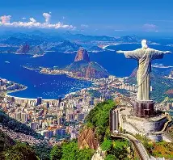
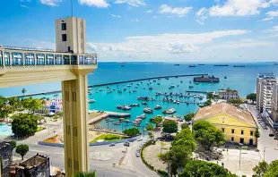
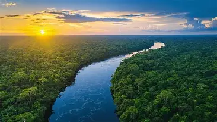

Rio de Janeiro

Praias famosas e Cristo Redentor.
Salvador

Cultura afro-brasileira e carnaval.
Amazônia

Natureza exuberante e aventura.

Praias famosas e Cristo Redentor.

Cultura afro-brasileira e carnaval.

Natureza exuberante e aventura.